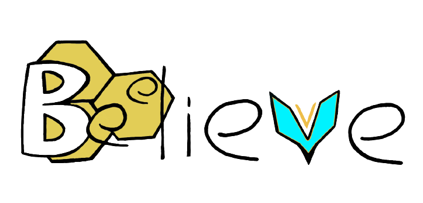

Beelieve - CFS
Unisciti a noi nel nostro viaggio verso un futuro in cui le api prosperano e l'equilibrio ecologico è preservato
PERCHÉ?
Dobbiamo salvare le api perché sono essenziali per l'impollinazione delle piante, la biodiversità, l'economia agricola e la sostenibilità ambientale. Senza di loro, molti alimenti e ecosistemi sarebbero seriamente compromessi. La protezione delle api è fondamentale per il nostro benessere e quello del pianeta.
COME?
Per aiutare le api, possiamo piantare fiori, evitare pesticidi, costruire alloggi per le api, informare gli altri sull'importanza delle api, sostenere gli apicoltori locali, promuovere politiche di conservazione e partecipare a programmi di volontariato. Ognuno di noi ha un ruolo nel preservare le api e l'ecosistema che dipende da loro.
CANDELE
Acquista le nostre candele per sostenere le fondazioni che aiutano le api. Illumina il tuo spazio e contribuisci alla conservazione di questi preziosi insetti.